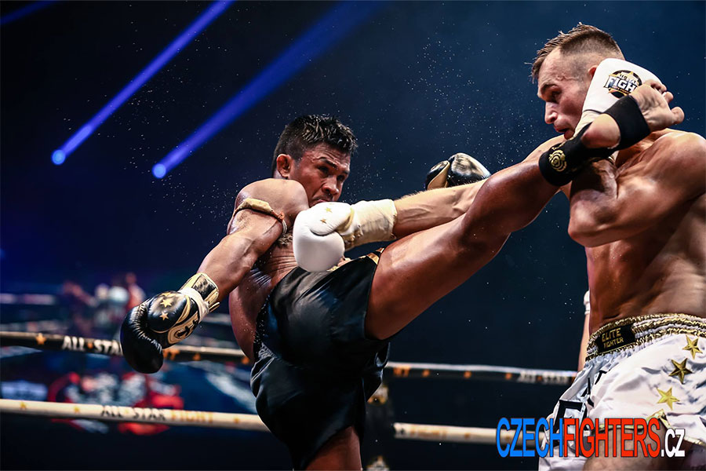

Zápasy dle oficiálních světových pravidel probíhají na 3 kola po 3 minutách s pauzou 1 minuty. V tomto pojetí se kromě suspenzoru, chrániče zubů a rukavic ještě používá ochranná helma, chránič loktů a holení. Podle profesionáních pravidel se avšak bojuje bez helmy, chráničů na holeně a chráničů na kolena
